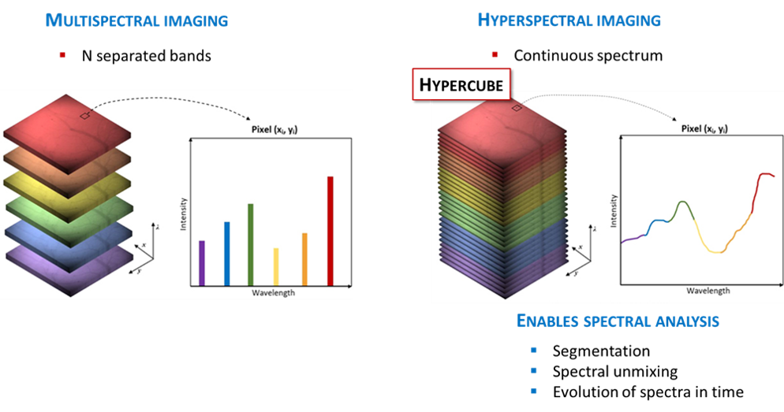

1 Week 1 - Getting started with remote sensing
1.1 Summary:
Going into the first week of remote sensing I wasn’t sure what to expect. All I knew is that it had something to do with satelites and people way smarter than me.
This week I learned that remote sensing is a powerful method of collecting data by measuring the reflected and emitted radiation of an area (USGS, 2024). The sensors used for gathering this data can be mounted on various platforms including satellites, planes, drones and even… mobile phones.
1.1.1 Remote Sensing Applications in Earth and Ocean Observations
Cameras on satellites and airplanes take images of large areas on the Earth’s surface. This technology provides the ability to monitor vast landscapes and track changes over time, which is especially useful for environmental studies, urban planning, and disaster management.
 Source:Industry tap
Source:Industry tap
Sonar systems on ships can be used to create images of the ocean floor without needing to travel to the bottom of the ocean. These systems emit sound waves that bounce off the ocean floor, providing detailed images of underwater features, such as seafloor topography and submerged objects, aiding navigation and marine research.
Source:divediscover
Cameras on satellites can be used to make images of biological and physical variables in the oceans. This includes observing sea surface temperature, chlorophyll-a concentrations, and ocean color. These images allow for the monitoring of marine ecosystems, tracking biological productivity, and understanding the impacts of climate change on ocean health.
1.1.2 Spectral resolution
During this week’s lecture, we covered spectral resolution, which I found interesting as it was a new concept to me.
It measures specific wavelengths of light across the electromagnetic spectrum (something I haven’t covered since GCSE physics..), which allows features like water, soil, and vegetation to be distinguished by their unique spectral pattern.
Source:Science Education through Earth Observation for High Schools
Different sensors are designed with different spectral resolutions.
 Source:nireos
Multispectral sensors capture a few broad spectral bands (3–10), mainly visible light and some non-visible bands including infrared. They are simple so therefore cost-effective and suitable for large-scale monitoring such as distinguishing forest from water, but their broad bands can obscure finer differences, such as between tree species or in water quality.
Hyperspectral imaging captures data in hundreds of narrow adjacent spectral bands. This allows for finer distinctions, such as between tree species or specific water pollutants. However, this detail comes at the cost of greater complexity and large datasets that are more demanding to process. Due to this, hyperspectral imaging is less suitable for continuous global monitoring.
1.1.3 What I make of this:
I currently work for the London Borough of Tower Hamlets, where the mayor has declared a waste emergency and the borough is currently the worst in the country for recycling. After conducting some further research I found that hyperspectral imagery would be very useful in this case to potentially detect and classify the types of contamination present in recycling loads (Taneepanichskul et al., 2025). However, this would require the purchasing of a hyperspectral camera. Likewise, I don’t know much about classification yet so I’ll see if i still think this in week 6…
1.2 Applications:
In the practical we used data from two multispectral sensors (Landsat 8 & Sentinel 2).
Landsat satellites detect earth data while in orbit at a 30m resolution and have been providing the longest continuous Earth Observation record dating back to 1972.
Whereas, Sentinel 2 (Beginning 2015) are a pair of satellites that monitor the earth’s land surface at a higher resolution (10-60m).
From the practical, the differences between Sentinel-2 and Landsat were clear. The contrast in imagery from the Landsat and Sentinel-2 can differ, and this is due to the differences in their sensor characteristics and processing methods. Landsat provides a 30 meter spatial resolution and Sentinel provides as high as 10 meters for certain bands. I was really confused from the practical why the images were so different. However it’s also because you might not be able to get an image from the exact time and day for both satellites.
Note: The Sentinel-2 data was resampled to 30m to match landsat

This is how it looks after I used the colour manipulation which is adjusting how spectral bands are displayed as colours. A bit like using a snapchat filter the image is the same, but we can change the colours to highlight different details.

1.2.1 Combining Landsat and Sentinel-2 data to assess burn severity
Quintano et al. demonstrated that combining landsat and Sentinel-2 data can significantly enhance research. The study used Landsat 8 images taken before the fire to measure vegetation health using the Normalised Burn Ratio, then compared them with images taken after the fire from either Landsat or Sentinel-2. This showed how much the vegetation changed, allowing the resarchers to map the severity of the burn in a consistent way.
Landsat offered a long-term archive and established indices for assessing burn severity. While Sentinel-2’s higher spatial resolution and increased revisit frequency allowed more detailed assessments and quicker data availability, which are particularly valuable during fire emergencies. Likewise, when pre-fire Landsat data was unavailable, Sentinel-2 alone still offered a useful approximation of fire impact. The researchers suggest that future work should focus on fine-tuning these methods to improve accuracy, especially for less severely affected areas, which would help rescue teams and forest managers respond more effectively to fire emergencies.
However this integrated approach is a great step to enhancing fire management by offering a more immediate and accurate understanding of the extent and severity of the burn.
1.3 Reflection:
My views on remote sensing have definitely changed. During my undergraduate degree I was always scared to choose any remote sensing modules as I was always warned about how difficult they were. This week, I began to see how it connects to everyday problems and decisions. The ability to extract patterns from imagery whether through hyperspectral or multispectral imagery made me think about how often we overlook information that is literally all around us, waiting to be seen.
I found the contrast between different satellite systems interesting. Initially, I was frustrated by the inconsistencies in the imagery and assumed that I was doing something wrong. However, this helped me realise the importance of evaluating data critically rather than accepting it at face value. This feels relevant beyond remote sensing, reminding me that any dataset is shaped by how it was collected, processed, and presented.
I’m looking forward to the upcoming weeks, to really get into detail about how remotely sensed data is currently used for research and policy. Even though my background is not in physics or earth sciences, I can already imagine links with waste management, and environmental policy. The possibility of using spectral patterns to identify waste materials makes me consider how remote sensing could provide valuable evidence for local councils. Though that also raises the question of data availability, there’s only so much open data out there and local governments do have a relatively limited budget. I’ll definitely look into whether the council has any access to remotely sensed data or if they have ever used remotely sensed data for analysis.
1.4 References
Taneepanichskul, N., Hailes, H. C. and Miodownik, M., (2025). Using hyperspectral imaging and machine learning to identify food contaminated compostable and recyclable plastics. UCL Open Environment 7, 1.
USGS (2025). What Is Remote Sensing and What Is It Used for? [online] www.usgs.gov. Available at: https://www.usgs.gov/faqs/what-remote-sensing-and-what-it-used.
Quintano, C., Fernández-Manso, A. and Fernández-Manso, O. (2018). Combination of Landsat and Sentinel-2 MSI data for initial assessing of burn severity. International Journal of Applied Earth Observation and Geoinformation, [online] 64, pp.221–225. Available at: https://www.sciencedirect.com/science/article/pii/S0303243417302039.